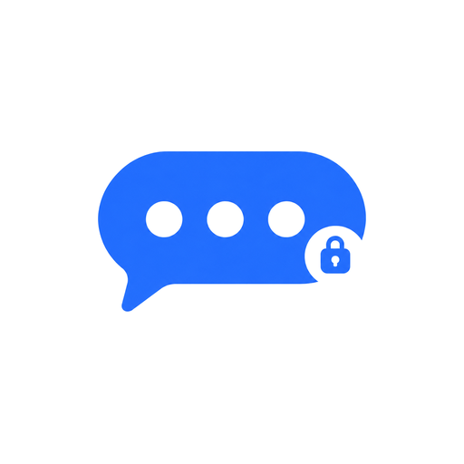

VibeHelp
Quick answers to the questions people ask most.
Can I get notifications without Google?
Yes. In Settings → Notifications pick one of the two Google-free ways:
- Direct connection (default): Vibe keeps its own connection to your server. No Google involved; allow Vibe to run in the background so Android doesn't stop it.
- Built-in, no Google: uses ntfy, an open push service, with no Google.
How does encryption work?
Direct messages and private groups are end-to-end encrypted: only the people in the chat can read them. Set up Chat backup in Settings with a recovery key so you can read old messages on a new device, and verify the devices of people you talk to by comparing emoji.
Strict encryption goes further and rotates keys more often, so one leaked key reveals as little as possible.
How do I find people?
Everyone on Matrix has an ID that looks like @name:server.org. Tap the add-contact button and type, paste or scan someone's ID. Vibe also suggests names from your server's user directory as you type. To share your own ID, the new chat screen shows your QR code for others to scan.
How do I get stickers?
Stickers and custom emoji come in packs. Open Settings → Chats & storage → Custom emojis and stickers to create a pack from your own pictures or import a pack file. Packs added to a group are available to everyone in it. Packs you don't want in the sticker tray can be hidden.
Something else? Ask on GitHub.